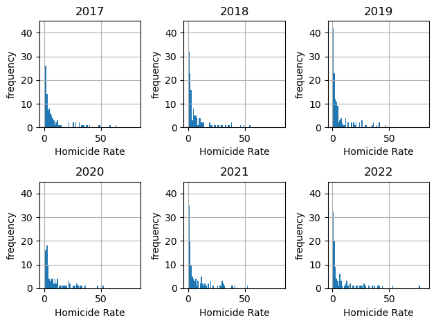
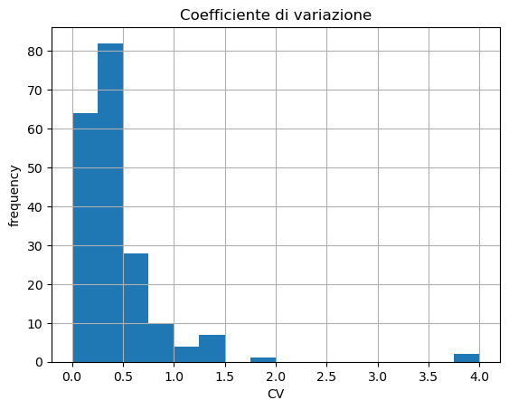
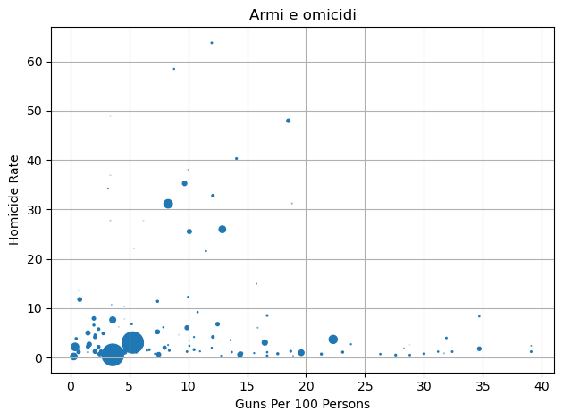
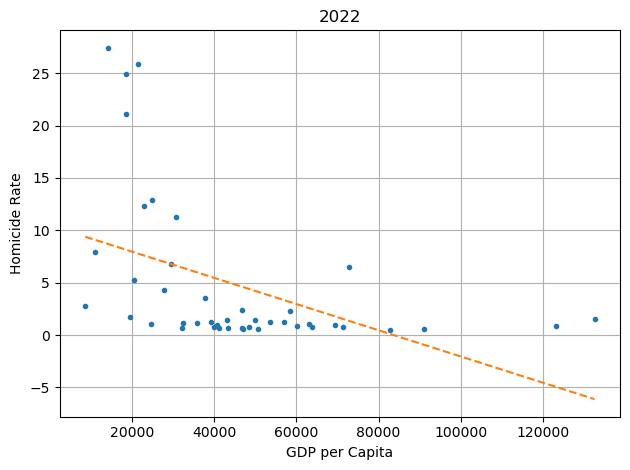
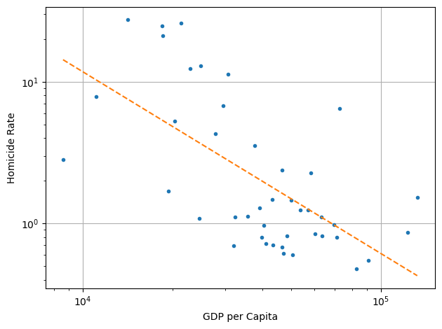
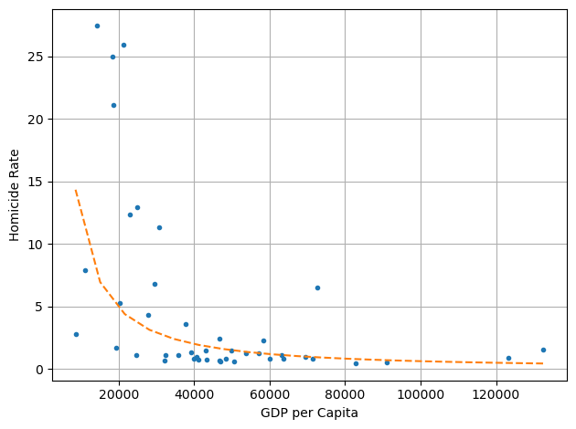
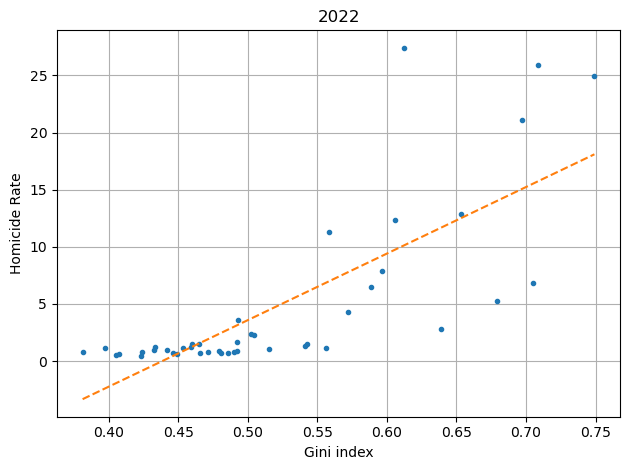
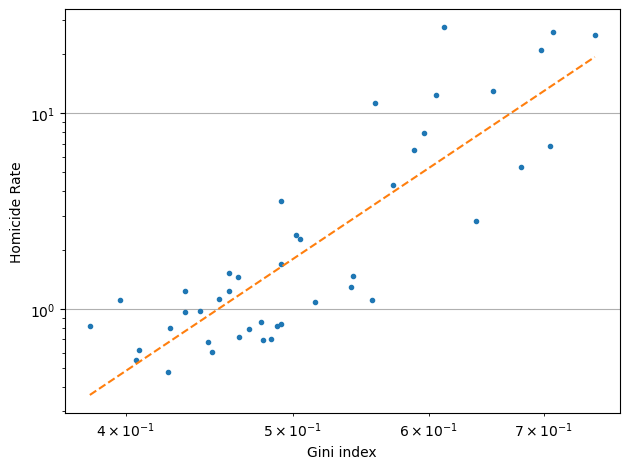
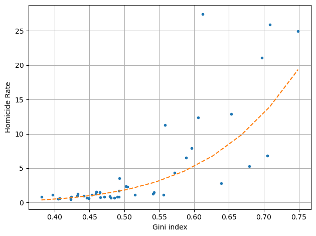

Siamo al sicuro?
L’11 marzo 2025 la giovane influencer giapponese Airi Sato viene accoltellata a Tokyio mentre trasmette in streaming davanti a migliaia di persone. A quello che risulta dai giornali si tratta dell’unico omicidio della giornata in tutto il paese, che registra mediamente due o tre omicidi al giorno a fronte di 124 milioni di abitanti.
Negli stessi giorni in Messico, che ha pressappoco lo stesso numero di abitanti del Giappone, veniva scoperto un crematorio clandestino a Teuchitlán, nello Stato di Jalisco, con un registro che riguardava centinaia di vittime. Il marzo 2025 fu comunque un mese positivo in Messico, la media di omicidi fu solo di 75 omicidi al giorno, in calo rispetto agli anni precedenti.
È sicuro il posto dove viviamo?
Ci sono posti più sicuri e posti meno sicuri o la violenza può manifestarsi un anno in un posto e un anno in un altro, in modo casuale?
Per avere un'idea della differenza tra un Paese e l’altro costruiamo un grafico che rappresenti la distribuzione del tasso di omicidi (numero di omicidi all’anno per centomila abitanti, Homicide Rate nel grafico) dal 2017 al 2022. La distribuzione è stata ricavata usando degli intervalli di larghezza 1 omicidio/anno/centomila abitanti.

Si osserva che la distribuzione nel suo complesso ha più o meno lo stesso andamento al passare degli anni: la maggior parte dei paesi ha un tasso di omicidi tra 0 e 5 ma ci sono alcuni paesi che raggiungono anche il valore di 80. Dunque ci sono differenze enormi da un paese all’altro, in alcuni luoghi gli omicidi possono essere anche 100 volte rispetto ad altri luoghi.
Quello che ora dovremmo capire è se queste fluttuazioni sono casuali o il tasso di omicidi è stabile.
Per farlo consideriamo ogni singolo paese nel tempo e per ciascuno calcoliamo media \( \mu \) e deviazione standard \( \sigma \) dei diversi valori e da questi otteniamo il coefficiente di variazione \( CV = \frac{\sigma}{\mu} \). Rappresentiamo la distribuzione dei coefficienti di variazione.

La maggior parte dei valori degli indici \( CV \) sono inferiori a 0.5, che indica una variabilità abbastanza contenuta; alcuni valori sono intorno a 1.5, che invece rappresenta una variabilità dello stesso ordine di grandezza del valore stesso del tasso di omicidi. Due paesi tuttavia hanno un valore di \( CV \) di circa 4, che rappresenta una grandissima variabilità. Valutiamo di quali paesi si tratta e se questa variazione corrisponde a eventi particolari.
Si tratta dell’isola di Sant’Elena e della repubblica di San Marino, che per anni hanno avuto un tasso di omicidi pari zero ma in un singolo anno è salito a… 17 a Sant’Elena e 4 a San Marino. Cosa è successo?
Nulla. Siccome si tratta di paesi piccoli, con pochi abitanti (alcune migliaia), basta un singolo omicidio che quando viene rapportato a centomila abitanti dà un valore alto. Quindi, per i paesi piccoli, piccole variazioni possono essere sopravvalutate dall’uso del parametro \( CV \).
In conclusione abbiamo visto che si la distribuzione del tasso di omicidi che il valore nei singoli paesi è piuttosto stabile ed è quindi un parametro significativo.
Analizziamo ora il legame con altri parametri.
La diffusione delle armi in diversi paesi non è un dato di facile reperibilità. I dati più esaustivi sono forniti da Small Arms Survey, un programma del Graduate Institute of International and Development Studies di Ginevra, e risalgono al 2017. Nel prossimo grafico mettiamo in relazione il numero di armi da fuoco possedute dalla popolazione ogni 100 abitanti con il tasso di omicidi. L’area dei punti è proporzionale alla popolazione di ogni paese.
Premettiamo che non è scontato in che direzione potrebbe andare una eventuale relazione di causa effetto, sempre che esista: è il tasso di omicidi che influisce sull’acquisto delle armi o viceversa? Questa domanda rientra sempre nell'ambito del famoso detto Correlation is not causation.

Il grafico del resto non mostra un andamento funzionale preciso: per la maggior parte dei Paesi, che occupano la fascia bassa del grafico, sembra che ci sia una lieve correlazione negativa, cioè una maggiore diffusione delle armi è legata a un minore tasso di omicidi; esiste poi un gruppo di Paesi che hanno un alto tasso di omicidi pur con una limitata diffusione di armi civili, che occupa la porzione in alto a sinistra del grafico. Si tratta principalmente di paesi con condizioni socio economiche paragonabili, trattandosi essenzialmente di Paesi del Sud e Centro America. Inoltre i Paesi che formano la coda ad alta diffusione di armi e basso tasso di omicidi, a destra, in generale hanno una popolazione limitata rispetto agli altri. Queste considerazioni fanno pensare che l'effetto della diffusione delle armi, pur influente, si mescoli ad altri aspetti altrettanto importanti e sia difficile da isolare. La ricerca di una correlazione lineare fornisce un coefficiente di correlazione di -0.11: coerente con l'osservazione di una correlazione negativa, si tratta di un valore decisamente basso, soprattutto rispetto al legame con i parametri economici che vedremo ora.
Analizziamo la correlazione tra il tasso di omicidi e la ricchezza prodotta annualmente in un paese, il PIL.
Per questa grandezza sono disponibili dati abbastanza diffusi fino al 2022; analizziamo i dati più recenti, ma potete verificare che i dati degli anni precedenti danno risultati molto simili.
Prima di tutto rappresentiamo il tasso di omicidi in funzione del PIL pro capite, cioè la ricchezza media prodotta da ogni cittadino (GDP per Capita in figura).

Si osserva una correlazione negativa: all’aumentare della ricchezza prodotta diminuiscono gli omicidi. Il coefficiente di correlazione lineare è -0,46. Si osserva anche che la diminuzione iniziale è molto rapida e questo può far pensare che sia più visibile in scala logaritmica.


Il grafico a sinistra rappresenta gli stessi dati con una scala logaritmica su entrambi gli assi: in questo caso il coefficiente di correlazione lineare è di -0,63. La correlazione non è strettissima ma comunque molto maggiore di quella relativa alla diffusione di armi e si presta a una interpretazione abbastanza plausibile: all’aumentare della ricchezza di una società la violenza si riduce, in particolare se la ricchezza prodotta supera una certa soglia.
Il grafico a destra è di nuovo in scala lineare come il primo ma mostra come tratteggio la relazione che corrisponde alla retta rappresentata a sinistra in scala bilogaritmica. Non ci interessa esprimerla analiticamente, perché sarebbe una forzatura visto quanto sono diffusi i dati ma mostra chiaramente il rapido calo del tasso di omicidi all’aumentare del PIL a partire da valori bassi.
Rivolgiamoci infine al legame tra il tasso di omicidi e la disuguaglianza economica, misurata attraverso l’indice di Gini. Questo indice vale 0 per una distribuzione assolutamente paritaria dei guadagni mentre vale 1 in una società in cui tutto il guadagno va a un solo individuo.
Rappresentiamo il tasso di omicidi in funzione di questo indice, come nel caso precedente sia in scala lineare che bilogaritmica e infine in scala lineare con indicata la relazione corrispondente alla retta del secondo grafico



In questo caso la correlazione è positiva: all’aumentare della disuguaglianza aumenta anche il tasso di omicidi, con un coefficiente di correlazione di 0,72, che diventa 0,86 nel grafico bilogaritmico; si tratta della correlazione più stretta che sia stata trovata nelle analisi relative al tasso di omicidi. Specularmente rispetto al caso del PIL, qui si osserva che quando la disuguaglianza supera certi valori la violenza aumenta più rapidamente, come mostra bene l’ultimo grafico che riporta la curva corrispondente alla retta di regressione del grafico bilogaritmico.
Per riassumere, le conclusioni che possiamo trarre da questa analisi parziale è che i dati sembrano indicare che la violenza aumenta quando c’è poca creazione di ricchezza e mal distribuita, mentre diminuisce quando la ricchezza prodotta è molta e distribuita equamente. Certo può sembrare una banalità, ma sembra importante osservare che la disuguaglianza è il fattore più strettamente correlato con il tasso di omicidi che è stato trovato in diverse analisi compiute. Si tratta comunque di un fenomeno complesso ed è possibile trovare molte altre variabili correlate ad esso.
Inoltre potrebbe essere interessante cercare le proposte fatte dalla politica per ridurre la violenza nei paesi in cui il tasso di omicidi è più alto per valutare in che direzione vanno.